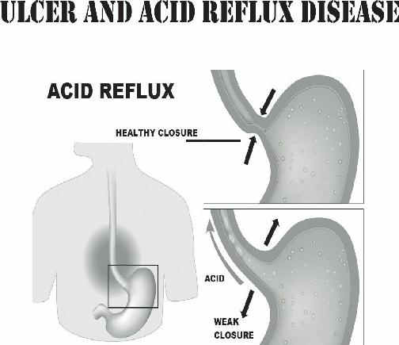
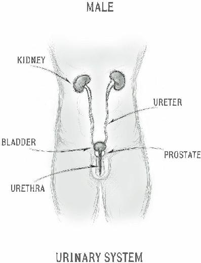
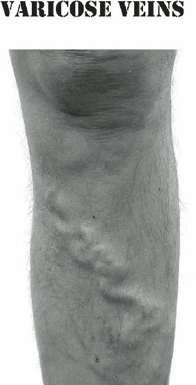
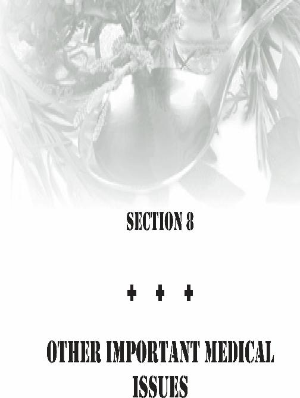
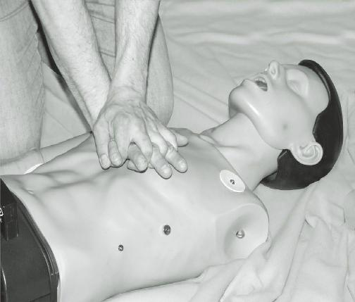
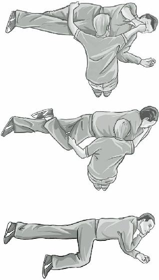

Pain down the left arm
Pain in the jaw area
Weakness
Fatigue
Sweating
Pale coloring
The main approach is to immediately give your patient a chewable adult aspirin (325 mg). This will act as a blood thinner; it aids in preventing further damage to the coronary artery and preserve oxygen flow. Aspirin works within 15 minutes to prevent the formation of blood clots in people with known coronary artery disease. One adult-strength aspirin contains 325 milligrams. The current study suggests that 325 milligrams of CHEWABLE aspirin would be preferred in the setting of a heart attack or sudden onset of “angina”
(cardiac-related chest pain). Angina occurs when not enough oxygen reaches the heart due to clogged coronary arteries.
A natural substance (Capsaicin) found in cayenne pepper may also be helpful during a myocardial infarction. The strength of peppers are based on a measurement system called Scoville heat units (H.U.).
For use during a heart attack, the H.U. should be at least
90,000. Give the conscious patient a glass of warm water mixed with 1 teaspoon of cayenne pepper. An alternative is to give 2 full droppers of cayenne pepper tincture or extract underneath their tongue. Studies at the
University of Cincinnati show an 85% decrease in cardiac cell death if cayenne pepper is given. The tincture, extract or a salve can be used for an unconscious person as a possible life saving procedure.
A person suffering a heart attack will feel most comfortable lying down at a 45 degree angle. Complete rest will cause the least oxygen demand on the damaged heart. Don’t forget to loosen constrictive clothing; tight clothes make a cardiac patient feel anxious and cause their heart to beat faster. This would cause more strain on an already damaged organ.
Aspirin, in small doses, is also reasonable as a preventative strategy. One baby aspirin (81 mg) daily is thought to help prevent the deposition of plaque inside the blood vessels. You might consider having all of your adults 40 and over on this treatment. Men are most likely to have coronary artery disease, as female hormones seem to protect women, at least before menopause. If your patient takes heart medications, administer them immediately.
Those in your survival community with coronary artery issues should stockpile whatever medications they take to deal with their symptoms. Angina (cardiacrelated chest pain) can be treated with nitroglycerine tablets. Placed under the tongue, they will give rapid relief in most cases.
High Cholesterol
In developed countries, high cholesterol is a major cause of coronary artery disease. In an austere setting, the tests performed to follow a person’s cholesterol levels will be unavailable, but you can still devise a strategy to decrease the risk of heart attack due to this problem.
Cholesterol is a fat-like substance made in the liver and other cells. It can be found in foods such as dairy products, meat, and eggs. The body needs some cholesterol in order to function properly, but the presence of too much of it negatively impacts the heart.
There is good cholesterol (HDL) and bad cholesterol
(LDL). High levels of bad cholesterol cause plaque.
Plaque is a deposit that forms on the inside of arterial linings, eventually forming a blockage that can lead to a heart attack. These are the different types of cholesterol which comprise “good” and “bad”:
Low density lipoproteins (LDL) or Very low density lipoproteins (VLDL): LDL and VLDL can cause buildup of plaque on the walls of arteries. The more you have of these, the greater the risk of heart disease.
High density lipoproteins (HDL): HDL helps the body counteract bad cholesterol in the blood.
The more HDL cholesterol you have, the better. If levels of HDL are low, the chance of coronary artery disease increases.
Triglycerides: Triglycerides are another type of fat that is carried in the blood by very low density lipoproteins. Sugar, Alcohol and overly high caloric intake increase the amount of triglycerides, making your blood “fatty”.
Many factors are involved in increasing “bad”
cholesterol levels:
Poor diet - Saturated fat and cholesterol in the food you eat increase cholesterol levels.
Weight. Obesity can also increase cholesterol.
Losing weight can help lower your LDL and total cholesterol levels, as well as increase HDL
(“good”) cholesterol.
Inactivity: Regular exercise can lower LDL cholesterol and raise HDL cholesterol.
Age: As we get older, cholesterol levels rise.
Sex: Young women tend to have lower total cholesterol levels than men of similar age.
After menopause, however, women’s levels rise just like a man’s does.
Diabetes. Poorly controlled diabetes increases cholesterol. Heredity. Families may have multiple members with high cholesterol due to genetic factors.
Despite this, you can take action to improve the situation:
Change your diet. If you have heart disease, limit daily intake of fatty foods to less than 200 milligrams. Staying away from saturated fats can make major changes in the amount of
“bad” cholesterol in your system.
Avoid Smoking. Smoking lowers HDL
(“good”) cholesterol levels. This trend is reversed when you quit.
Be active. Exercise increases HDL cholesterol in some people. if done daily, weight, diabetes, and high blood pressure all benefit.
Stockpile Medications. Make sure that your group or family members on medications for high cholesterol (called “statins” accumulate medications if at all possible.
Even if you stockpile medications, they will eventually run out in a long term survival situation. Don’t despair, as various alternatives are available: Some of the herbal and nutritional supplements that may help include:
Garlic: Garlic is an herb that has multiple beneficial effects on the body. It has been reported to decrease cholesterol levels in some people. Be aware that it may have health risks in those on blood thinners.
Sugar Cane: Sugar cane contains policanisol, a substance that has been shown to lower cholesterol levels in several studies.
Red Yeast Rice: Red yeast rice contains lovastatin, a substance founds in some prescription cholesterol medications. Its effect is still under study.
Myrrh: The mukul myrrh tree contains a resin known as guggulipid. Indian studies seem to indicate that total and LDL cholesterol is lowered with regular use, although U.S. studies have failed to achieve the same results.
Fenugreek, artichoke extract, yarrow, holy basil, ginger, turmeric, and rosemary all have been proposed as possible options to lower cholesterol.
In addition, dietary changes may be helpful. Increasing fiber, soy, omega-3 fatty acids and plant sterols may be options to help decrease “bad” cholesterol levels. Again, some of these may adversely affect those people who take blood thinners.
Other causes of chest pain
There are various other causes of chest pain. Injury to muscles and joints in the torso may mimic cardiac pain.
In this type of pain, you will notice that the pain gets worse with movement of the affected area, or that you can elicit pain by pressing on it. Rest the patient and give them Ibuprofen or Acetaminophen for pain.
Acid reflux may also cause pain (usually burning in nature) in the chest area. This type of pain is usually improved with antacids in tablet form such as calcium carbonate (Tums, Rolaids, etc.) or liquid versions with magnesium hydroxide/aluminum hydroxide Maalox,
Mylanta). Relaxation techniques such as massage in a sitting position may also help. For a further discussion about acid reflux and other gastro-intestinal issues, see the next chapter.
Chest pain is also seen in some patients with anxiety issues. This is usually accompanied by tremors, a rapid heart rate and hyperventilation.
Sedative herbs like Valerian Root, Passion Flower, and Chamomile may be helpful in this situation, as are some prescription medications such as diazepam
(Valium). See the discussion of anxiety later in this book.

Ulcers
Chronic stress, as will be seen in a collapse scenario, can manifest itself in ways that are both emotional and physical. One of the physical effects is increased stomach acid levels.
Excessive acid can cause an inflammation of the esophagus (the tube that goes from the throat to the stomach), the stomach itself and/or the next part of the bowel, called the duodenum. The irritated lining becomes weak and an erosion is formed. This erosion is called an
“ulcer” and can cause bleeding or even perforate the entire thickness of the lining.
The major symptom of an ulcer is a burning or gnawing discomfort in the stomach area. This pain is often described as “heartburn”. It usually occurs in the left or mid-upper abdomen or may travel up to the breastbone. Sometimes it will be described as hunger pangs or indigestion. The discomfort that goes along with this problem is hard to ignore and will decrease work efficiency. Therefore, diagnosis and treatment are important to get your group member back to normal.
There are many causes of pain in the chest and stomach areas. Chest pain caused by coronary heart disease (“angina”) is just one of the possibilities and was discussed in the last section.
To make the diagnosis of ulcer or acid reflux disease, the timing of the discomfort is important. Ulcer and acid reflux discomfort occurs soon after eating but is sometimes seen several hours after a meal. It can be differentiated from other causes of chest pain in another way: it gets better by drinking milk or taking antacids.
As you can imagine, this wouldn’t do much for angina.
Many ulcers and inflammation are caused by a bacterium known as Helicobacter pylori. H. pylori may be transmitted from person to person through contaminated food and water, so proper water filtration and sterilization will decrease the likelihood of this infection.
Antibiotics such as
Amoxicillin and
Metronidazole in combination are the most effective treatment for Helicobacter pylori ulcers.
Other causes include the use of ibuprofen or aspirin, which can be an irritant to the stomach in some people.
Avoidance of these drugs can prevent these ulcers and inflammatory pain. Smoking and alcohol abuse are also known causes.
Acid Reflux Disease
Acid reflux disease is caused by acid traveling up the esophagus. This is sometimes caused by a relaxation at the stomach-esophagus border, or by an out pouching of the area (called a “hiatal hernia”). The primary symptom is heartburn, but severe disease can cause chest pain. It is usually relieved by antacids and/or by sleeping with the upper body raised.
Your patient may benefit from avoiding certain foods. These commonly include:
Acidic fruit (for example, oranges)
Fatty foods
Coffee
Certain teas
Onions
Peppermint
Chocolate
Eating smaller meals and avoiding acidic foods before bedtime is a good strategy to prevent reflux. Obese individuals seem to suffer more from this problem, so weight loss might be helpful.
Medications that commonly relieve acid reflux include calcium, magnesium, aluminum, and bismuth antacids such as Tums, Maalox, Mylanta or PeptoBismol, as well as other medications such as Ranitidine
(Zantac), Cimetidine (Tagamet), and Omeprazole
(Prilosec). These medications are available in nonprescription strength and are easy to accumulate in quantity.
Home remedies abound for acid reflux:
Organic apple cider vinegar: Mix one tablespoon in four ounces of water, drink before each meal.
Aloe Vera Juice: Mix one ounce in two ounces of water before a meal.
Baking soda: Mix one tablespoon in a glass of water and drink right away when you begin to feel heartburn
Glutamine: An amino acid that has an antiinflammatory effect and reduces acid reflux. It can be found in milk and eggs.
It’s important to remember to communicate with your patients. Many in the preparedness and homesteading community are rugged individualists. They may be unlikely to tell the medic about something they consider trivial, like heartburn. Someone that is clearly in pain, losing efficiency, or unable to sleep should always be questioned about their symptoms. It could be something that you just might be able to help them with.
Seizures occur when the brain’s electrical system misfires. Instead of sending out signals in a controlled manner, a surge of haphazard energy goes through the brain. These abnormal signals can cause involuntary muscle contractions, poor control of certain organs, and loss of consciousness. A person with chronic problems with convulsions is sometimes said to have “epilepsy”
and may be called an “epileptic”. There are several types of seizures:
Generalized Seizures may involve the entire brain.
There are several types that have been identified:
Petit Mal seizures: No involuntary contractions, but a temporary loss of concentration or even consciousness. Blank staring may be noticed.
Strange sensations known as “auras” (smells, colors, etc.) may herald an upcoming convulsion.
Grand Mal seizures: shaking and jerking with loss of consciousness, bladder control, and sometimes violent shaking and jerking. Grand mal seizures are what most people associate with epilepsy.
Myoclonic seizures: Involuntary movement of the muscles without loss of consciousness
(usually).
Partial seizures: Also known as “Jacksonian”
seizures, these are caused by abnormal signals from one part of the brain. They may involve involuntary shaking of just one limb or specific twitching behavior. The patient may notice auras prior to some partial seizures. Although vision may be temporarily impaired, there may or may not be changes in mental status.
There are various causes of convulsive disorders, such as:
High fever (in children, mostly)
Head injury
Meningitis (Infection of the central nervous system)
Stroke
Brain tumors
Genetic predisposition
Idiopathic (unknown – about 50% of cases)
In a collapse situation, there won’t be the sophisticated equipment such as EEGs (electroencephalograms) and
Brain Scans to make the diagnosis, so we will have to watch for symptoms to identify the problem. It is important to know that one seizure does not make someone an epileptic. Multiple episodes are required to be certain. In some cases (especially childhood seizures associated with fevers), a person might even “outgrow”
the condition.
In addition to auras that give some warning that an attack may be imminent, there are also triggers that sometimes cause a convulsion. A good example is a bright flashing light. Avoidance of these triggers will decrease the number of episodes.
The most important aspect of treatment when intravenous medication is no longer available will be to prevent the patient from injuring themselves during an attack. A tongue depressor with gauze taped around it and placed in the mouth was once a standard recommendation, but it was found to cause injuries to both the patient and the rescuer. Keep everything away from the patient’s mouth, especially your fingers.
You shouldn’t restrain the person physically, but remove nearby objects that could cause injury. An exception is if the patient is standing when the seizure starts. In this case, grab the patient and gently lower them to the floor. Placing them in the CPR “recovery”
position (discussed in the CPR section of this book) will help keep their airway open.
Do not give oral fluids or medications to an epileptic after a seizure until they are fully awake and alert. If the convulsion is caused by a fever, as in children, cool them down with wet compresses. Anyone in your survival group with a convulsive disorder should work towards stockpiling their medicine. Popular drugs are
Dilantin, Tegretol, Valproic Acid, and Diazepam
(Valium).
Emphasize the importance of extra medications in cases of natural disaster or other emergencies to your family or group members.
Natural alternatives have long been espoused to decrease the frequency and severity of convulsions.
Many vitamins and herbal supplements have a sedative effect, which calms the brain’s electrical energy. They may be taken as a tea (1 teaspoon of the herb in a cup of water) or as a tincture (an extract with grain alcohol).
Here are some that have been reported as beneficial for prevention:
Bacopa (Bacopa monnieri
Chamomile (Matricaria recutita)
Kava (Piper methysticum) – (too much may damage your liver)
Valerian (Valeriana officinalis,
Lemon balm (Melissa officinalis),
Passionflower (Passiflora incarnata)
Vitamin B12 supplements
Vitamin E supplements
Vegetable juices may help eliminate toxins that could induce seizures. Drink a combination of carrot juice, cucumber and beet juice; if possible drink a half liter a day. Coconut oil, 3 tablespoons a day, has also been reported to decrease seizure frequency. Your experience may vary.
When a Person Collapses
Sometimes, a patient may collapse, not from a convulsion, but from simple fainting. This must be differentiated from the person who has “seized”. In this circumstance, your patient should not have jerky movements as in a Grand Mal seizure or stare into space as in a petit mal seizure. A person who has had a seizure will tend to be difficult to rouse for a period of time.
This is called a “post-ictal” state and will resolve on its own over time. If there has been a head injury, however, a concussion cannot be ruled out (discussed in the section on head trauma). Most people who have fainted will regain alertness relatively soon after the episode.
Dehydration, low blood sugar and various other medical conditions can cause fainting. Good hydration and appropriate dietary intake will prevent most episodes. If someone feels as if they are about to collapse, they should sit down and put their head down between their knees to increase blood flow to the brain.
If you see someone who is fainting from a standing position, grab them and gently lower them to the ground
(in this case, on their back). In normal times, of course, you would have someone call emergency medical services.
Evaluate the victim quickly. If someone has only fainted, they will be breathing and have a pulse. If this is the case, raise their legs about 12 inches off the ground and above the level of their heart/head. This will help blood flow to the brain. Assess the patient for evidence of trauma, bleeding, or seizures. If bleeding, apply direct pressure to the wound. If the person is having a convulsion, treat as previously discussed. If no pulse or breathing, begin CPR as discussed in the section later in this book.
Once a person who has fainted has been determined to be breathing normally, have a pulse, and have no bleeding injuries, tap on their shoulder and ask in a clear voice “Can you hear me?” or “Are you OK?”. Loosen any obviously constricting clothing and make sure that they are getting lots of fresh air by keeping the area around them clear of crowds. If you are in an area that is hot, fan the patient or carefully carry them to a cooler area.
If you are successful in arousing the patient, ask them if they have any pre-existing medical conditions such as diabetes, heart disease or epilepsy. Stay calm and speak in a reassuring manner. Don’t let them get up for a period of time, even if they say that they are fine.
People oftentimes are embarrassed and want to brush off the incident, but they are still at risk for another fall.
Once the victim is awake and alert (Do they know their name? Do they know where they are? What year it is?), you may slowly have the patient sit up if they are not otherwise injured. If you are not in an austere setting, emergency medical personnel are on the way;
wait until they arrive before having the patient stand up.
In a survival situation, however, you will have to make a judgment as to whether and when the victim is capable to return to normal activities.
Common causes of fainting include dehydration and low blood sugar, so some oral intake may be helpful.
ONLY do this if it is clear that they are completely conscious, alert, and able to function. Test their strength by having them raise their knees against the pressure of your hands. If they are weak, they should continue to rest. Close monitoring of the patient will be very important, as some internal injuries may not manifest for hours.

Over the course of time, the moving parts of humans suffer wear and tear just like the moving parts of any other machine. Damage to ankles, knees, hips, and even the spine occurs chronically over the course of years.
We can expect an acceleration of this process when demands on our body increase in times of trouble. The performance of activities of daily survival will, in particular, wear out our joints.
Degenerative damage to joints is called
“osteoarthritis”. Many advances in degenerative disease, such as hip replacements, may no longer be available in austere settings, so we will have to figure out other options. We will not have curative remedies, but we can still improve the quality of life of the patient.
Besides degenerative changes, inflammation of the joints (also known as “arthritis”) can also be caused by auto-immune conditions. Antibodies are formed by the body that attack its own joints and sometimes cause striking deformities. Bacterial infections, some of which are sexually transmitted, also can significantly damage joint tissue. The cause must be identified and treated quickly.
Regardless of why the arthritis in the joint occurred, the signs and symptoms are frequently similar. You will see:
Pain (mild or severe)
Swelling
Joint stiffness and decreased range of motion
Reluctance to use the affected joint
Fluid accumulation in the joint space
Muscle weakness (with chronic arthritis)
Fever (septic/bacterial arthritis)
Arthritis Types
Osteoarthritis
As you can imagine, Osteoarthritis is the most common form of arthritis, especially in older individuals. It can affect both larger and smaller joints of the body. Hands, feet, back, hip, and knees are most commonly affected.
The disease is acquired by daily wear and tear on the joints, although it can also be a long term effect of a previous injury. Many athletes, for example, may develop arthritis in this manner at a relatively young age.
Obesity causes increased stress on joints as well and leads to osteoarthritis.
Warm compresses are useful to treat discomfort and stiffness.
Non-steroidal anti-inflammatory drugs
(NSAIDs) like ibuprofen or aspirin are helpful, as is
Capsaicin creams or ointments. The worst cases may require oral or injectable steroids. These, however, are unlikely to be available in austere settings. Sometimes, a needle is placed to drain excess fluid from an affected joint to give relief. This is call “arthrocentesis” and carries with it the risk that you might introduce infection.
Rheumatoid Arthritis
Rheumatoid arthritis is the most common auto-immune disease in the world today. It is a disorder in which the body’s own immune system starts to attack its own tissues. The attack is not only directed at the joint but to other parts of the body. Unlike some joint diseases, rheumatoid arthritis tends to affect the same joint on
BOTH sides of the body. Women are more susceptible than men.
Rheumatoid arthritis especially affects joints in the fingers and wrists, but is also common in knees and elbows. Over time, it can lead to severe deformities in a few years if not treated. Rheumatoid arthritis occurs in younger populations than osteoarthritis, even striking children on occasion.
Other symptoms associated with rheumatoid arthritis that you might NOT see with degenerative osteoarthritis:
Dry mouth
Dryness, Itching or burning in the eyes
Insomnia
Strange sensations in the hands or feet
Nodules under the skin
Chest pain when taking a breath (also known as “pleurisy”)
Treatments concentrate on easing the symptoms, as for osteoarthritis, but no cure exists. Medical therapy includes strong anti-inflammatory medications such as oral steroids (example: Prednisone).
Another auto-immune disorder that can cause joint disease is known as Systemic Lupus Erythematosis
(SLE). Although usually diagnosed by blood testing,
Lupus can be differentiated from rheumatoid arthritis due to its one-sided nature. You will also see patients with SLE experience hair loss and body rashes. Lupus is often treated with long-term oral steroids.
Even though rheumatoid arthritis cannot be cured, you can prevent the condition from worsening. Weight loss is one way to improve symptoms and prevent progression. Physical therapy to strengthen muscles and joints is thought to be helpful.
Bacterial Arthritis
Bacterial arthritis (sometimes called “septic” arthritis) is often the result of some penetrating injury that allows organisms to invade the joint space. It can also occur from within, as when someone with a blood infection
(septicemia) or bone infection (osteomyelitis) has spread to a joint. Common skin bacteria, such as Streptococcus and Staphylococcus, are the usual suspects but gonorrhea, a sexually transmitted disease, can also be the cause.
Typical symptoms of a bacterial arthritis are the same as osteoarthritis, except that the patient may have a fever and may exhibit redness or warmth over the affected joint. In addition to standard treatment, antibiotics will be helpful.
Gout
Gout is another condition that destroys joints over time.
It is caused by deposition of uric acid crystals in the joint, causing inflammation. Some people simply produce too much uric acid or don’t eliminate it well. Obesity is a major risk factor, as is diabetes. This illness occurs primarily in men; a history of certain types of kidney stones may be associated with future episodes of gout.
The presentation of gout will appear as:
Inflammation in one or two joints. The big toe is the classic example, but knees and ankles may also be affected.
Warm, red, painful joints. The pain is throbbing and often severe. Even laying a sheet over it may cause pain.
Fever.
Episodic repeat attacks (50% of cases).
After multiple episodes, permanent damage occurs and the joint loses its range of motion. Chronic sufferers may also develop lumps called “tophi”. Tophi are lumps below the skin, mostly around joints. They may drain chalky material from time to time.
Specialized prescription drugs are available for gout, such as Colchicine and Allopurinol. If you have a family member with gout, encourage them to stockpile extra medications; they won’t be found in your standard medic’s storage.
Lifestyle and dietary changes may be helpful:
Avoid alcohol
Reduce how many uric acid elevating foods you eat. These include: Liver, herring, sardines, anchovies, kidney, beans, peas, mushrooms, asparagus, and cauliflower..
Limit excessive meat intake.
Avoid fatty foods
Eat enough carbohydrates
Natural therapy for joint disease
From an alternative standpoint, there are several treatments for joint pain caused by arthritis.
Various glucosamine supplements are popular;
glucosamine sulfate preparations have more evidence for their effectiveness than glucosamine hydrochloride. Take
1,500 milligrams once a day on a regular basis.
Glucosamine is often paired with chondroitin sulfate.
800-1,200 milligrams a day has been shown to possibly slow progression of some arthritic conditions.
Two teaspoons of lemon juice or apple cider vinegar mixed with a teaspoon of honey twice a day is a timehonored treatment. Other oral supplements reported to be effective against joint pain are:
Turmeric powder
Soybean Oil
Avocado Oil
Rose hips
Fish Oil
Bathua leaf juice
Alfalfa tea
For external use:
Use Arnica essential oil on affected areas (good for muscle aches as well)
Apply warm vinegar to aching joints.
Mix powdered sandalwood into a paste; it has a cooling effect when rubbed on a joint.
Make an ointment from 2 parts olive oil and 1 part Kerosene (use extreme caution: Kerosene is flammable!).
Acupuncture, massage therapy, and physical therapy may alleviate muscle spasms associated with arthritis.
Electricity delivered by a device known as a TENS unit may be helpful (if you have electricity).
The kidney and gall bladder are two organs that have the propensity in some people to develop an accumulation of crystals. These crystals form masses known as
“stones”. Some are large and some are as small as grains of sand, but any size can cause pain (sometimes excruciating). These issues can put group members out of commission at a time when they are most needed.

Kidney Stones
Kidney stones are most commonly seen in those persons who fail to keep themselves well hydrated. Even small stones can lead to significant pain (known as “renal colic”), and the larger ones can cause blockages that can disrupt the function of the organ. Once you have had a kidney stone, it is likely you will get them again at one point or another. Kidney stones are usually NOT associated with infections.
Once formed in the kidney, stones usually do not cause symptoms until they begin to move down the tubes which connect the kidneys to the bladder (the
“ureters”). When this happens, the stones can block the flow of urine. This causes swelling of the kidney affected as well as significant pain. Kidney stones as small as grains of sand may reach the bladder without incident and then cause pain as they attempt to pass through the tube that goes from the bladder to the outside (the “urethra”).
There are several different types of kidney stones:
Calcium stones: The most common, they occur more often in men than in women, usually in those 20 to 40 years old. Calcium can combine with other substances, such as oxalate, phosphate, or carbonate to form a stone.
Cysteine stones: These form in people who have “cysteinuria”, a condition that tends to run in families.
Struvite stones: This variety is mostly found in women and can grow quite large; they can cause blockages at any point in the urinary tract. Frequent and chronic infections are a risk factor.
Uric acid stones: More common in men than in women, these stones are associated with conditions such as gout.
To diagnose a kidney stone, look for pain that starts suddenly and comes and goes. Pain is commonly felt on the side of the back (the “flank”). Lightly pounding on the right and left flank at the level of the lowest rib will cause significant pain in patients with kidney stones or kidney infections. As the stone moves, so will the pain; it will travel down the abdomen and could settle in the groin or even the urethral area.
Other symptoms of renal stones can include:
Bloody urine
Fever and chills
Nausea and vomiting
Some dietary changes may prevent the formation of kidney stones, especially if they are made of calcium.
Avoid foods such as:
Spinach
Rhubarb
Beets,
Parsley
Sorrel, and
Chocolate
Also, decreasing dairy intake will restrict the amount of calcium available for stone formation. This will keep them as small as possible and, therefore, easier to pass.
Your treatment goal as medical provider is to assist the stone to pass through the system quickly. Have your patient drink at least 8 glasses of water per day to produce a large amount of urine. The flow will help move the stone along.
Some have used diuretic medications for the same purpose. Pain relievers can help control the pain of passing the stones (renal colic). For most pain,
Ibuprofen will be the available treatment of choice.
Stronger pain medications, if you can get them, may be necessary for severe cases.
Some of the larger stones will be chronic issues, as the high technology and surgical options used to remove these will not be available in a collapse scenario.
Medications specific to the type of stone may be helpful:
Allopurinol (prescription medicine for uric acid stones and gout).
Antibiotics (for struvite stones).
Sodium bicarbonate or sodium citrate (which increases the alkalinity of the urine). These drugs decrease the likelihood of formation of uric acid stones.
A good home remedy to relieve discomfort and aid passage of the stone is lemon juice, olive oil, and apple cider vinegar. With the first twinge of pain, drink a mixture of 2 ounces of lemon juice and 2 ounces of olive oil. Then, drink a large glass of water. After 1 hour, drink a mixture of 1 tablespoon of raw apple cider vinegar with 2 ounces of lemon juice in a large glass of water. Repeat this process every 1 to 2 hours until improved.
Other natural substances that may help are:

Horsetail tea (a natural diuretic)
Pomegranate juice
Dandelion root tea
Celery tea
Basil tea
Gall Bladder Stones
The gall bladder is a sac-like organ that is attached to the liver; it stores the bile that the liver secretes. Gallstones are firm deposits that form inside the gallbladder and could block the passage of bile. This blockage can cause a great deal of pain and inflammation (known as
“cholecystitis”).
There are two main types of gallstones:
1. Cholesterol stones: The grand majority, these are not related to the actual cholesterol levels in the bloodstream.
2. Bilirubin stones: These occur in those people who have illnesses that destroy their red blood cells. The by-products of this destruction releases a substance called “bilirubin” into the bile and forms a stone.
Risk factors for this condition can be described as the 4
“F’s”:
FAT: The majority of those with gallstones are overweight.
FEMALE: The majority of sufferers are women.
FORTY: Most people with gallstone issues are over 40 years old.
FERTILE: Most women with gallstones have had children.
Additional risk factors include diabetes, liver cirrhosis
(discussed in the section on hepatitis), and low blood counts (“anemia”).
Luckily, most people with this problem don’t have any symptoms. If a large stone causes a blockage, however, you may experience what is called “biliary colic”. Symptoms of biliary colic include:
Cramping right upper abdomen pain (constant, spreading to the back).
Fever.
Jaundice (yellowing of the skin and whites of the eyes).
Discolored bowel movements (gray or grayishwhite).
Nausea and vomiting.
The classical finding on physical examination is
“Murphy’s Sign”. Press with one hand just below the midline of the lowest rib on the front right. Then, ask your patient to breathe deeply. If the gallbladder is tender, the patient should complain of significant pain at the site.
Unfortunately, the main treatment for gallstones is to surgically remove the gall bladder (you can live without it and stay healthy). As surgical suites are unlikely to be available in a collapse situation, you might consider some alternative remedies. These are mostly preventative measures:
Apple cider vinegar (mixed with apple juice)
Chanca Piedra, (Phyllanthus niruri), a plant that is native to the Amazon; translated, the name means “Break Stones”.
Peppermint
Turmeric
Alfalfa
Ginger root
Dandelion root
Artichoke leaves
Beet, Carrot, Grape, Lemon juices
Sadly, it is very difficult to eliminate most of the risk factors for gall bladder disease. If you’re forty, female, and have children, there is not much you can do about it.
You may be able to something about being fat, however.
Dietary changes to decrease intake of high-cholesterol foods may help you decrease weight and the risk of gallstones.

Seborrheic Dermatitis
In austere circumstances, a caregiver may consider a skin rash to be of no consequence. Symptoms associated with it, however, may cause sleep loss or irritation that make affect a group member ’s work efficiency. Therefore, it makes common sense to treat any condition that decreases the quality of life of a loved one.
Dermatitis simply means an inflammation of the skin.
This condition may have many causes and may vary in appearance from case to case. Most types of dermatitis usually present with swollen, reddened and/or itchy skin.
Continuous scratching traumatizes the irritated area and may lead to cellulitis once the skin is broken.
Some of the more common types of skin inflammation are:
Contact dermatitis: Caused by allergens and chemical irritants. A good example would be poison ivy.
Seborrheic dermatitis: A commonly seen condition that affects the face and scalp
(common cause of dandruff).
Atopic Dermatitis or Eczema: A chronic itchy rash that can be found in various areas at once and tends to be intermittent in nature. This may be accompanied by hay fever or asthma.
Neurodermatitis: A chronic itchy skin condition localized to certain areas of the skin (as seen in a herpes virus infection known as “Shingles”).
Stasis dermatitis: An inflamed area caused by fluid under the skin, commonly seen on the lower legs of older individuals. Poor circulation is a major factor here.
Many of the above conditions may appear similar to the non-medical person.
Indeed, some cannot be conclusively diagnosed without sending a sample of skin to a laboratory. Whatever the cause, effective treatment of symptoms will be important in a grid-down situation.
Limiting trauma from repeated scratching will prevent secondary, deeper infections from developing.
Moisturizing dry skin may be one way to help decrease frequency of outbreaks of dermatitis. Bathing is a healthy habit; it may, however, dry out your skin. You can prevent this by:
Using mild soaps: Deodorant soaps are to be avoided in patient with significant dermatitis.
Moisturize: Apply any of a myriad of oils or creams to the skin while wet. This will seal in the moisture.
Dry gently: Pat rather than rub dry with a towel.
Bathe less: Sure enough, limiting the frequency and duration of baths may decrease symptoms.
Of all the types of skin conditions, you will most likely see contact dermatitis in a survival situation, as your people will be exposed to substances while scavenging that may cause reactions. Some of these include:
Soaps, laundry soap and detergents.
Cleaning products.
Rubber or Latex.
Metals, such as nickel.
Weeds, such as poison ivy, oak or sumac.
Once you’re sensitized to an allergen, future exposures will cause skin reactions. Your patient will probably experience these reactions for the rest of his or her life.
The following factors seem to worsen the condition:
Stress
Rapid changes of temperature
Sweating
Harsh detergents or soaps
Rough clothing or bedding
Avoidance is the cornerstone of prevention.
Corticosteroid creams and cool moist compresses are a good start for treatment purposes. Use these only until the rash is improved. Antihistamines such as Benadryl or
Claritin will help relieve itching. Of course, if the dermatitis was caused by contact with a specific irritant, avoid it if at all possible.
Scalp irritations caused by Seborrhea may be treated by shampoos that contain tar, pyrithione zinc, or ketoconazole. Scaly areas may be treated with mineral or olive oil.
Stasis dermatitis may be improved by wearing support hose. Pay careful attention to infections that may be developing. Wet dressings may soften rough areas.
Neurodermatitis caused by Shingles may be treated with anti-viral agents, such as Acyclovir, Famciclovir or
Valacyclovir (Zovirax, Valtrex or Famvir, respectively).
In addition to hydrocortisone cream and wet compresses, some creams that suppress local immune response such as Pimecrolimus (Elidel) may improve atopic dermatitis. Vitamin B12 and rice bran products are both thought to be of help.
Some are proponents of light therapy. This involves exposing affected skin to controlled amounts of natural or artificial light. It may be effective in preventing recurrences of atopic dermatitis.
Other natural supplements that improve dermatitis often involve Omega-3 fatty acids, which have an antiinflammatory effect. Used with evening primrose oil, it is thought to be especially effective. Chamomile cream is considered to be as potent as a mild hydrocortisone.
Calendula has skin-soothing properties and may protect against contact dermatitis. Be aware, however, that it may trigger an allergic reaction on broken skin.

Varicose veins are dilated blood vessels, usually in the legs, which have lost tone in the valves that control blood flow. This swelling of the vascular structures occurs in about 15% of the population, and becomes more common with age (50% over age 50). Women are several times more likely to have this problem than men.
Varicosities are gravity dependent; they may be more common in people whose occupation requires constant standing. In a power-down setting, we will be spending more time on our feet by necessity. Therefore, we must plan to prevent, if possible, and treat varicose veins before they become serious.
Varicose veins are similar to but not the same as
“spider veins”. Spider veins are tiny vessels called capillaries and exist everywhere in your body. When they become varicose, they appear like little red or blue spider webs; you may find them on your legs, face, or just about anywhere. People with fair complexions seem to get more of them.
Classically, varicose veins are larger, blue, swollen, and stick out from the skin. They tend to look twisted or contorted. Varicosities cause the circulation to become less efficient. This causes pain and fatigue in the legs, and could lead to an inflammation known as “phlebitis”.
You’re more likely to get varicose veins if you:
Are 50 years of age or older. The valves in your veins weaken as you age.
Have a family history. If your mother had varicose veins, you are likely to get them as well.
Are a woman. High levels of estrogen as seen during puberty, pregnancy, and while taking birth control pills increase your risk.
Are obese. Extra weight puts pressure on the veins and causes them to dilate.
Work in a profession that requires long periods of standing, lifting weights or sitting with your legs bent.
Spend longs hours in the sun, especially if your complexion is fair. You may notice them first on your cheeks or nose.
Besides the discomfort and an unpleasing cosmetic appearance, varicose veins are usually not dangerous.
Occasionally, however, you might see one of these complications:
Thrombophlebitis: a varicose vein on the surface of the skin can become inflamed; this is due to a blood clot which formed due to the poor circulation in the area.
Symptoms include:
Painful swelling
Warmth to the touch
Redness (sometimes along the line of the vein).
Tender, hard nodules
Itching
Fever
Basic treatment involves moist warm compresses and anti-inflammatory medicine for discomfort and fever.
Elevation of the affected extremity may be useful. Elastic support hose is helpful while performing activities of daily living. Although most cases of thrombophlebitis are not due to infection, antibiotics are occasionally needed.
Cephalexin (Keflex) is known to have activity against
Staphylococcus, the most common bacterial culprit.
As an aside, hemorrhoids are a type of superficial thrombophlebitis: See the section describing them later in the book.
Deep vein thrombosis (DVT): A blood clot that forms in a DEEP vein. The patient will experience a
“full” or “firm” feeling, usually in the calf area. This will be accompanied by pain, heat, swelling, and redness as in superficial thrombophlebitis.
While many people may present with no symptoms at all, a DVT can be dangerous if the blood clot dislodges and makes it way to the lungs or other vital organs. Indeed, shortness of breath may be the only symptom noticed. In this circumstance, a blood clot may have already made it into the lung. This is referred to a “pulmonary embolism” and is possibly lifethreatening. Other signs and symptoms may include breathlessness, chest pain, a fast heart rate, panting, and/or bloody phlegm.
In addition to compresses and pain relief, patients with deep vein thrombosis may require blood thinners;
Salicin from the under bark of willows, poplars, and aspens is a natural alternative if the pharmaceuticals have run out. The amount given using this method will, however, always be uncertain. Each tree may have variable amounts of Salicin. Do not attempt this treatment on someone currently on medications such as
Coumadin.
If your patient has varicose veins, have them stock up on compression stockings or support pantyhose while times are good. These will be unavailable in a collapse setting and neither will curative treatments like surgery, lasers, or chemical injections. If the resources are there to eliminate this issue in normal times, consider doing so. Encourage your patients at risk to:
Exercise their legs to improve tone; this will provide support to the blood vessels.
Avoid standing for long periods of time. Shift their weight from foot to foot often and take a short walk if they sit all day.
Keep their weight down to avoid putting strain on their legs.
Elevate their legs above the level of the heart for a half hour daily, and perhaps during sleep.
Wear support stockings.
Avoid wearing high heels for long periods (I doubt you’ll be wearing high heels after a disaster).
Eat a low-salt diet. Less salt consumption can help with the swelling that you see with varicose veins.
Wear sunscreen; this will limit spider veins in people with fair complexions.
The herbal remedy most quoted to treat varicose veins is the horse chestnut (Aesculus hippocastanum. Horse chestnuts contain a substance called aescin, which appears to block enzymes that damage capillary walls.
Make a tincture (grain alcohol-based mixture) with the herb and take 1 tablespoonful up to 3 times a day.
For external use only, rub a mixture of 4 parts witch hazel with 1 part tincture of horse chesnut and rub on affected varicosities.


Most medical books start off with a chapter on CPR
(Cardio-Pulmonary Resuscitation), so you might wonder why this subject has not been given coverage so far in this volume. The answer is based on hard realities that we must confront in a survival scenario.
Although CPR (cardio-pulmonary resuscitation) is an important skill that everyone should know, there are fewer situations in a collapse scenario where CPR will return a victim to normal function. There are only a small number of circumstances where a patient goes from being a patient in need of resuscitation to a person who is back to normal.
CPR is best used as a stabilization strategy. You want to get the heart pumping and breathing supported so that you can get your patient as quickly as possible to a facility where there are ventilators, defibrillators, and other high technology. But what about a situation where this technology is no longer available?
There won’t be cardiac bypasses for your patient who has had a heart attack. There won’t be surgical suites for your patient with a shotgun blast to the abdomen or chest. The sobering truth is that many of these injuries will be “mortal” wounds. This means that death is the inevitable end result, no matter what you try to do. The poor prognosis for these people in hard times is tragic; it makes you truly appreciate the benefits of modern medicine.
There are still instances, however, where CPR may actually restore a gravely ill person to normal function.
Airway obstruction with a foreign object can be dealt with by using the Heimlich maneuver. Environmental conditions such as hypothermia, heat stroke or smoke inhalation will oftentimes respond to resuscitative efforts with complete recovery. Severe anaphylactic reactions may require CPR until the patient responds to
Epinephrine and resolves the attack. Rarer events such as lightning strikes or drowning may require resuscitation to revive the victim.
I chose not to put a large number of illustrations or write an entire course on how to do CPR in this book.
There is no substitution for learning it in person by taking a hands-on course. I don’t want you to think that you don’t have to do this just because you read this book. Your responsibility as medic is to get training; this is mandatory for anyone that expects to be a caregiver in a long-term survival scenario.
Airway Obstruction
One situation where you can save a life by knowing how to perform a simple maneuver is in the case of an airway obstruction. This most commonly occurs as a result of a bite of food lodging in the back of the throat and cutting off respiration. This is a relatively common way to die, even in modern times, and it really shouldn’t be.
If you see a conscious adult in sudden respiratory distress, ask quickly: Are you choking on something? If they can answer you, there is still air passing into their lungs. If it’s a complete blockage, they will be unable to speak. They will probably be agitated and holding their throat, but they will hear you and (frantically) nod their head “yes”. This is your signal to jump into action.

Tell the victim that you’re there to help them and immediately get into position for the Heimlich maneuver, otherwise known as an “abdominal thrust” (see figure above). Get behind the victim and make a fist with your right hand. Place your fist above the belly button; then, wrap your left arm around the patient and grasp the right fist. Make sure your arms are positioned just below the ribcage. With a forceful upward motion, press your fist abruptly into the abdomen. You might have to do this multiple times before you dislodge the foreign body.
If your patient loses consciousness and you are unable to dislodge the obstructive item, place the patient in a supine position and straddle them across the thighs or hips. Open their mouth and make sure that the object can’t be removed manually. Give several upward abdominal thrusts with the heels of your palms above the belly button (one hand on top of the other). Check again;
you might have partially dislodged the offending morsel of food.
In old movies, you might see someone slap the victim hard on the back; this is unlikely to dislodge a foreign object and will waste precious time. An exception to this is in an infant: place the baby over your forearm (facing down) and apply several blows with the heel of your hand to the upper back.
An extreme method that can be used to open an airway is the “tracheotomy”. This procedure, also called a cricothyroidotomy, involves cutting an opening in the windpipe below the level of an obstruction.
Tracheotomy should be performed only when an airway obstruction completely prevents the ability to breathe after multiple Heimlich maneuvers have been attempted unsuccessfully.
To perform a tracheotomy, you will need a sharp blade and some sort of tube, such as a straw. Of course, a good first aid kit would be very helpful. Don’t worry about antiseptics for now; you are performing this procedure because someone may die in the next few minutes.
The procedure goes as follows;
Start at the Adam’s apple. Move about 1 inch down the neck until you feel a bulge. This is the cricoid cartilage.
Make a horizontal incision with your knife or a razor blade in the crease between the Adam’s apple and the cricoid cartilage. This incision can be less than an inch long.
Incise downward a half-inch deep or so. There shouldn’t be a lot of blood.
Below the incision, you’ll see the greyish cricothyroid membrane. Make an incision through it; this should allow passage of air into the lungs. Be careful not to cut too deeply.
Place something hollow in the opening, to maintain a clear airway. A straw would do in a pinch. Try to get it a couple of inches down the windpipe; doing this makes it less likely to fall out.
If the patient fails to breathe on their own, you may need to perform CPR, including rescue breaths through the tube you inserted.
I don’t have to tell you that this is a dangerous procedure. A lot can go wrong, but the patient is dying and it may be your last resort. Only consider it when help is NOT on the way, and you have tried every other option first.
CPR in the Unconscious Patient

Rescue Breath(only if CPR-trained)
If you come across someone who is apparently unconscious, be certain to first verify their mental status. Simply ask them loudly: “Are you OK?” No answer? Grasp the person’s shoulders and move them gently while continuing to ask them questions. If they are still unresponsive (which you should be able to determine in seconds), it’s time to check their pulse and respirations. If they aren’t breathing or no pulse is felt, it’s time to start resuscitative efforts. Place your patient in a position so that they are lying flat on their back.
You will begin chest compressions by placing the heel of your hand in the middle of the chest; Place it, palm down, over the lower half of the breastbone at the level of the nipple. Place your other hand on top and interlace your fingers. Keeping yourself positioned directly above your hands (arms straight), press downward in such a fashion that the breastbone (also called the “sternum”) is compressed about 2 inches.
Allow the chest to recoil completely and then perform 30 compressions, at a rate of at least 100 compressions per minute.
This works well for adults but you would want less pressure in a child. Be certain to avoid the rib cage, as broken ribs are a common complication of the procedure.

After 30 chest compressions, evaluate the victim for breathing and clear the airway. Look quickly inside the mouth for a foreign object. If there is none, place the patient’s head in a position that will allow the clearest passage for air to enter the body. This is called the
“Chin-Lift”. Tilt the head back (unless there is evidence of a neck injury) and grasp the underside of the chin and lower jaw with one hand and lift. Using this method, the tongue and other throat structures are placed in a position that helps the patient take in oxygen. A useful medical item is a plastic “airway”. There are both rigid oral and flexible nasal versions that help keep the airway open.
If you aren’t trained in CPR, just continue compressions. If you DO know CPR, you may give 2 long breaths mouth-to-mouth (3-5 seconds between each one). These are called “rescue breaths”. Pinch the nose closed to prevent the escape of air that needs to get into the lungs.
You can determine the effectiveness of your efforts by watching the patient’s chest rise as you give the breaths. Continue giving 30 compressions, then 2 rescue breaths for 5 cycles or two minutes. Then, check your patient’s status. If no luck, repeat the process all over again.
Many people are reluctant to perform rescue breaths due to concerns about contagious disease. If this is an issue, take a nitrile glove and cut the ends off of the two middle fingers. Place over the victim’s mouth (cut glove fingers down) as you breathe for them. This provides a barrier that still allows air flow. Commercially-produced protective CPR masks are also available to keep with your first aid kit.
Another useful item for your medical supplies is a bag valve mask, otherwise known by the brand name
“Ambu-Bag”. This can be placed on the patient’s mouth to form a seal through which you can ventilate them by pressing on an air-filled “bag”. This provides pressure to force air inside the respiratory passages.
To review: if you are the lone resuscitator and have training, perform 30 compressions and then deliver 2 more breaths as before. Try for a compression rate of
80-100 beats per minute. Perform several cycles of the above; then re-evaluate the patient’s pulse and respirations. If you don’t have training, simply perform chest compressions at a rate of 100 per minute until a trained helper arrives. Once you have started CPR, don’t stop until the patient has responded or it is clear that they will not.
After 30 minutes of CPR without result, the pupils of the patient’s eyes will likely be dilated and will not respond to light. At this point, your patient has expired and you can cease your efforts. Some may feel this is not long; in truth, however, just a few minutes without oxygen is enough to cause irreversible brain damage. In a grid-down situation, you will not be equipped to provide long term chronic care to someone who no longer has brain activity.
There are units known as defibrillators available that, though quite expensive, may be useful in a cardiac arrest. These machines produce an electric shock to the heart and sometimes can restart a pulse that has stopped.
If caused by a heart attack, a cardiac arrest without defibrillation will have a very low survival rate. It would be wise for your survival group to chip in and purchase a unit. “Home” defibrillators can be found online and are surprisingly easy to use:
Turn the unit on and connect the electrodes per the instructions. Place one electrode pad on the right chest about the nipple and below the collarbone. Place the other on the left chest outside the nipple and several inches below the armpit. The unit will analyze the heart rate (or lack of one) and tell you, believe it or not, whether a shock is necessary. If one is indicated, clear everyone away from the patient and press the button to activate the electric shock. Recheck vital signs and begin chest compressions as needed.
Let’s say that you are successful in establishing a pulse and breathing in your unconscious patient. If you must, for some reason, leave them, position them so that they will not vomit and possibly aspirate stomach acid into the lungs. (see image below). This is known as the
“recovery position”.
In some cases, the actual injury or illness that caused unconsciousness may not be fatal, but the resulting regurgitation of stomach acid into the lungs (“aspiration pneumonia”) will be. Many alcohol, pill or recreational drug overdoses cause death in this manner.

T he Recovery Position
To achieve the recovery position:
Kneel on one side facing the patient.
Position the patient’s arm (the one closest to you) perpendicular to the body.
Flex the elbow.
Position the other arm across the body.
Bend the leg that is farthest from you up; reach behind the knee and pull the thigh toward you.
Use your other arm to pull the shoulder farthest from you while rolling the body toward you.
Maintain the upper leg in a flexed position so that the body is stabilized.
Although CPR will be of limited use when modern medical facilities are not available, it is still important to know. A survival community medic should not only be skilled in performing CPR, but should also teach it to every group member.
Headaches are one of the most common medical symptoms that you will see in your role as medic. The brain matter itself doesn’t have pain receptors; there are several structures around the brain, however, that do.
Muscles, blood vessels, and sinuses are just some examples.
Many consider headaches to be, well, more of a headache than an actual danger, but headaches can be associated with a large number of medical conditions, not to mention traumatic injuries.
There are almost more causes for headaches than you can reasonably write down; in a collapse, however, common causes will be:
Hunger
Dehydration
Stress
Infections
Fevers
Elevated blood pressures
Caffeine or Alcohol withdrawal
Fumes
Headache pain is the interaction between the brain, blood vessels, and local nerves. Nerves associated with blood vessels and muscles are activated and send pain signals to the brain. Headaches that occur suddenly may be related to infection or colds/flus, but may be the herald of a life-threatening event such as a stroke. Ear and sinus infections are particularly likely to cause headaches.
Headache Types
Tension headache
By far, the most frequently-seen type of headache is the tension headache. This is caused by spasms of the muscles of the neck and head. Tension headache is usually seen bilaterally (on both sides) and/or the back of the head and neck. They may be related to stress, anxiety or depression, a head injury, or even just time spent with the head or neck in an abnormal position.
Lack of sleep, teeth grinding, and poor posture are also factors.
Tension headaches may last a half hour or they can last a week. A sensation of pressure or tightening is the most common symptom. This type of headache may be improved by massaging the back of the neck and temples. Ibuprofen and Acetaminophen are old standbys as treatment. Identifying the situation that triggers the headache may help avoid future episodes.
Sinus Headache

Sinus headaches are associated with constant pain in the front of the face. A sinus is an air-filled cavity in the bones of the skull. The forehead, cheeks or the bridge of the nose are the areas affected most by sinus infections;
oftentimes, they may be one-sided, which will help you to make the diagnosis. Sudden head movement may intensify the pain.
Antibiotics may be helpful to treat the infections that can cause this type of headache. Amoxicillin (Fish-Mox